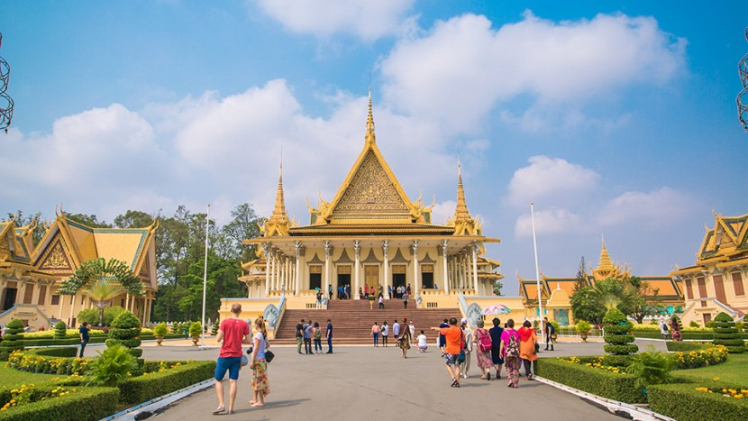

There are much to be enjoyed around Phnom Penh; the list of interesting places around the city is a long one. However, even if time permits, a ride around the city might be a good place to start.
Depending on one’s idea of entertainment (fun), any vacation wouldn’t be quite complete if shopping and dipping into the local culture, knowing some history and sampling the delights of the food are not included. The city got its name from Wat Phnom.
There are several fully fletched modern malls in the city that cater to just about every convenience including F&B, like those in any big city around the world. For a more exotic shopping experience, check out the Central market; an Art Deco giant ‘ant-hill’ you wouldn’t want to miss. Toul Tom Pong market earns for itself a place in almost every tourist magazine for its variety and diversity of ‘Best Buys’ including antiques and branded overrun shoes and clothes at huge discounts. Along Sothearos Boulevard are some neat ‘antique’ shops that sell silver trays, betel boxes, belts, old coins, silver or wooden statuettes and marble carvings; good souvenirs. The art galleries on Street 178 near the National Museum is also a good place to explore. Top that with a visit to the museum. The museum boasts the largest display of Khmer arts in the world; more than 14,000 with some dating back to the 11th century. The Royal Palace is just a strolling distance from the museum.
The Royal Palace is a complex of beautiful buildings designed in classical Khmer style architecture nestled among plots of beautifully manicured gardens. The famous ‘Silver Pagoda’ is just next to the palace; both of these top tour spots are situated at the river front. Along this stretch of road on the land side, check out the shops, eateries and pubs before you call it a day. Boat rides can be booked directly at the riverfront. Some of these would take you on a romantic night cruise with dinner.